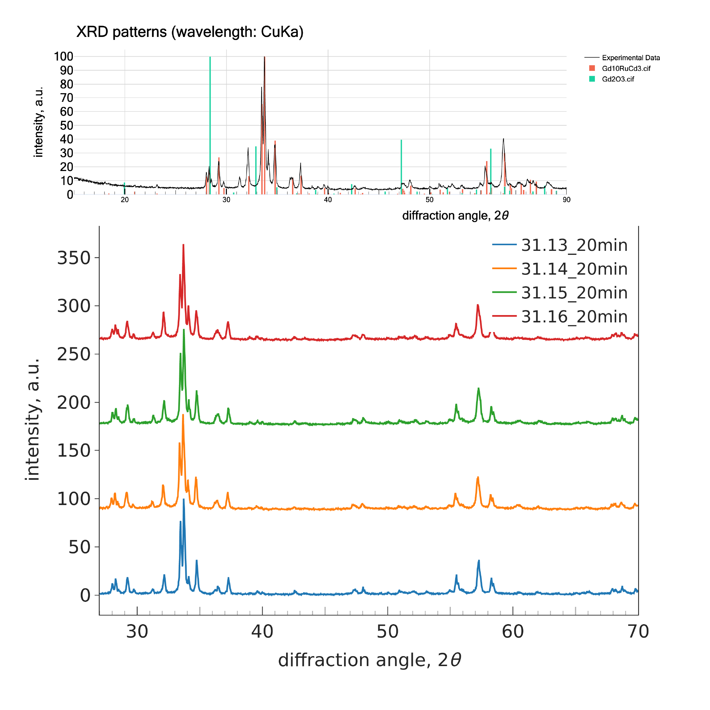
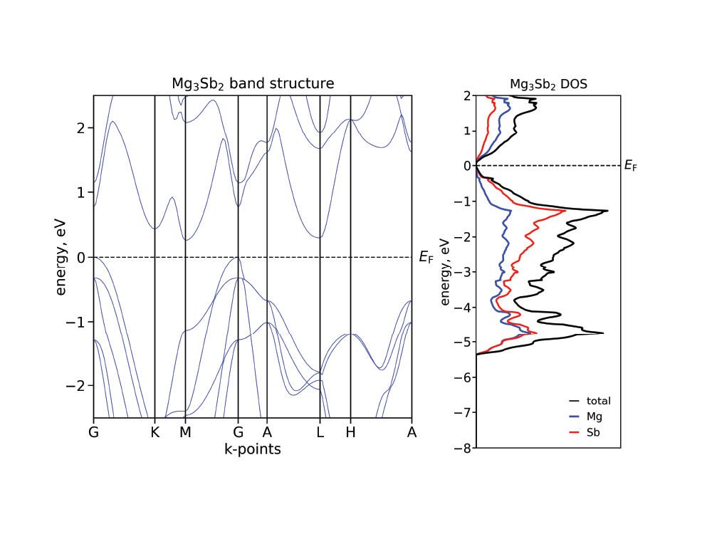
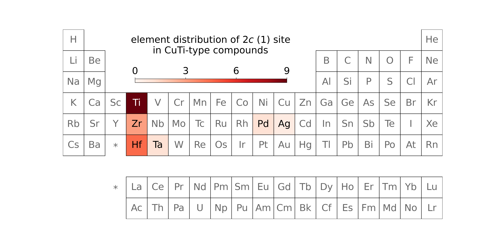
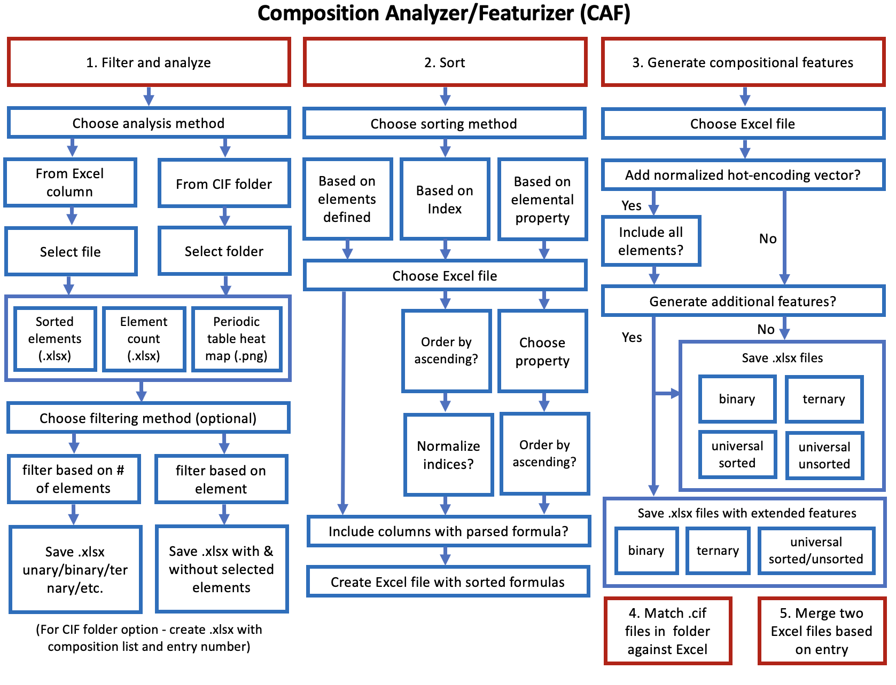
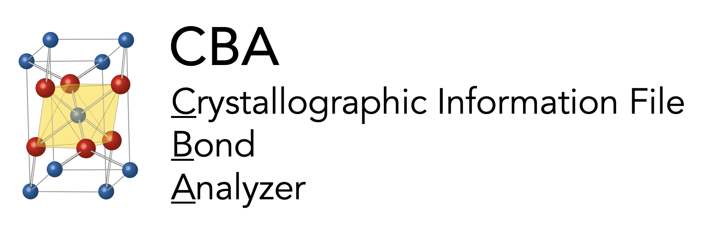
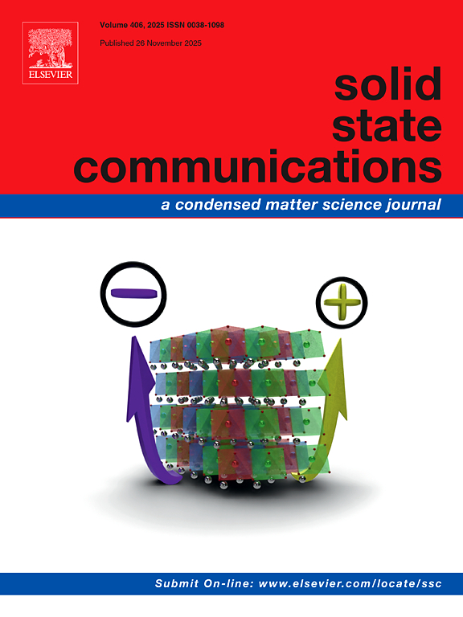
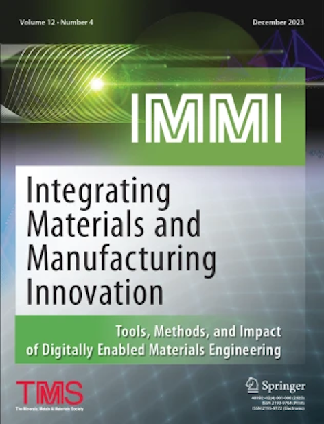
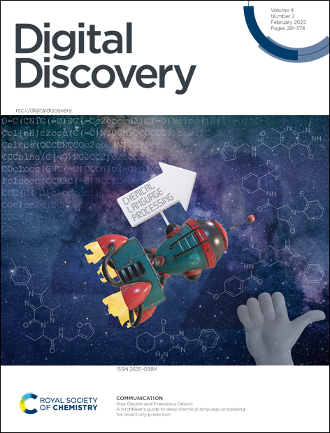
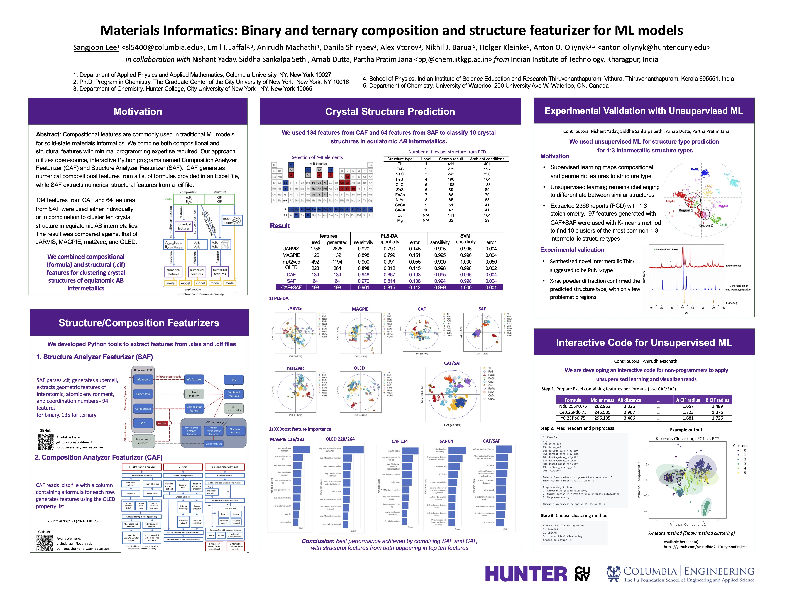

{kind=link}

XRD Matcher & Comparison Tools
Compare experimental XRD patterns with other .xy files and .cif references for quick phase analysis. If helpful, please cite this work.
Hi! I'm a PhD student at City University in NYC. My research interests revolve around using computational methods to explore novel materials and chemistries coupled with experimental validation.
I'm currently working with Dr. Anton Oliynyk on synthesizing and studying novel intermetallics and alloys. We use DFT and ML to predict things like crystal structures and properties. Our research focuses the majority of the periodic table and especially rare-earth elements, with every model we develop being experimentally validated. I recently presented here on this and here on this.
I was a research chemist for the applications group at ICL. I made foam and burned it. A more sophisticated response would be that I evaluated of different bromine and phosphorus-based flame retardants for applications in polyurethane. This included both R&D and market support for customers.
In undergrad I worked alongside Dr. Julia Schneider at Fordham University to synthesize single and polymer organic semiconductors and Dr. Joshua Schrier to computationally investigate these molecules with DFT. Our work was presented here on this and this as well as here on this .

Compare experimental XRD patterns with other .xy files and .cif references for quick phase analysis. If helpful, please cite this work.
Dash app for plotting TOPAS XRD .txt and HKL outputs with an easy upload workflow. GitHub: refinement-plot-gui.

Automatically converts LMTO CSV outputs into clean, publication-ready plots.

Interactive tool for site-wise CIF analysis, including composition tables and heat maps; demo by Dr. Taylor Sparks here.

Generates compositional features and streamlines formula filtering, sorting, and table merging.

High-throughput app for extracting bond lengths and atomic mixing metrics from CIF files.




Gordon Research Conference
Newry, ME — Jul 2024

Gordon Research Conference
Newry, ME — Jul 2024
I compiled some guides below to streamline the process for anyone who needs them, feel free to check them out!
{kind=link}
{kind=link}
{kind=link}
{kind=link}